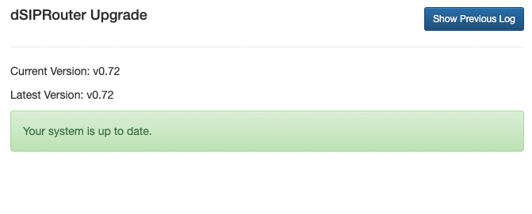

1.10.1. Upgrading dSIPRouter
1.10.1.1. Auto Upgrade Feature (Released 0.72)
The dSIPRouter auto upgrade feature was released in 0.72. It allows you to upgrade dSIPRouter from the User Interface(UI) and the command line. If you are upgrading from 0.70 you will need to use the command line option since the 0.70 version doesn’t have the upgrade feature builtin. Upgrading from 0.70 doesn’t require a dSIPRouter Core Subscription license because this is the first release of the upgrade framework unless you need support during the upgrade process. However, future releases of dSIPRouter will require a Core Subscription License, which can be purchased from the dSIPRouter Marketplace.
1.10.1.2. Upgrade 0.70 to 0.72
You can upgrade from 0.70 by doing the following
SSH to your dSIPRouter Instance
Run the following command
curl -s https://raw.githubusercontent.com/dOpensource/dsiprouter/v0.72/resources/upgrade/v0.72/scripts/bootstrap.sh | bash
Login to the dSIPRouter UI to validate that the upgrade was successful.
Note, if the upgrade fails you can purchase a dSIPRouter Core Subscription which can be purchased from the dSIPRouter Marketplace.This will provide you with support hours so that we can help with the upgrade.
1.10.1.3. Upgrade 0.644 to 0.72
There is no automated upgrade available from 0.644 to 0.72. Support is available via a dSIPRouter Core Subscription which can be purchased from the dSIPRouter Marketplace.This will provide you with support hours so that we can help with the upgrade.